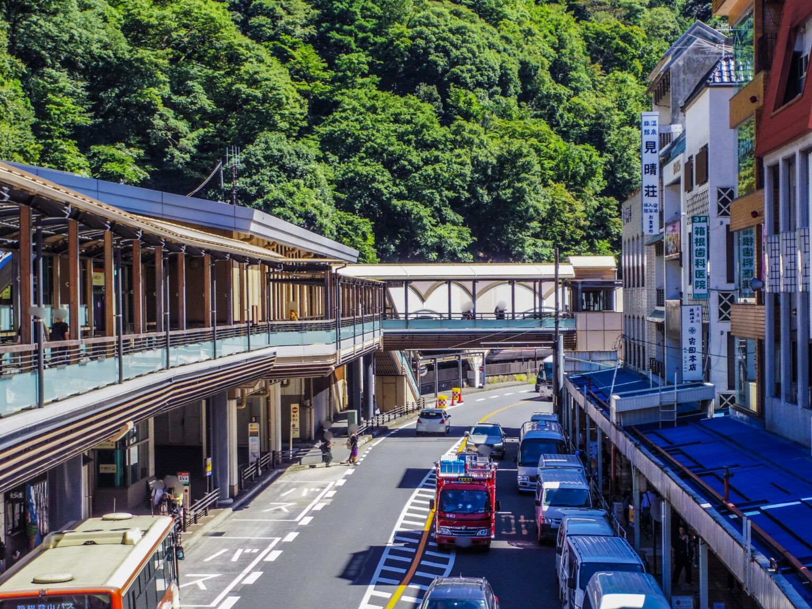
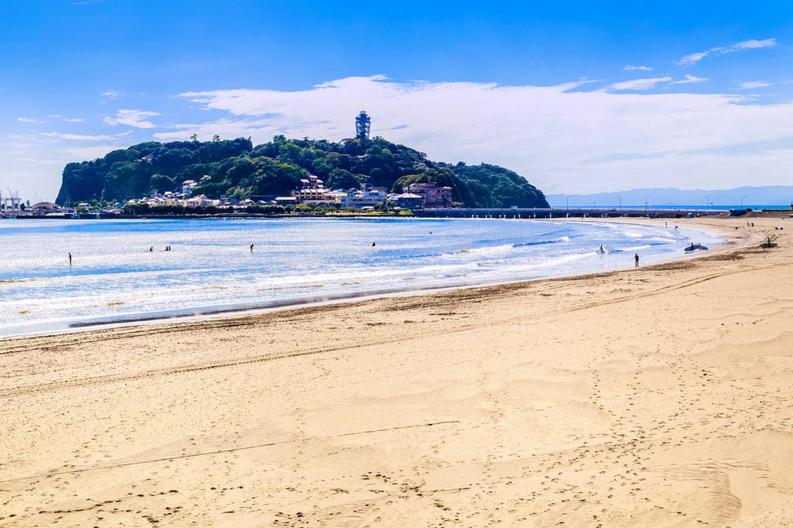
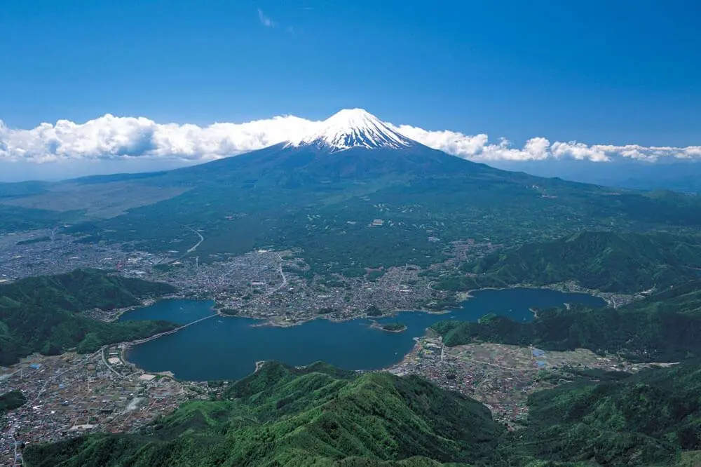

首都圏・海沿い
海ほたるPA
湾岸道路を走る絶景ポイント。実走での速度維持や車線変更の練習に最適です。
初心者から上級者まで楽しめる多様なコースをまとめました。
湾岸道路を走る絶景ポイント。実走での速度維持や車線変更の練習に最適です。

観光地ならではのカーブや坂道が多く、運転技術の向上に非常に役立つ場所です。

海沿いをドライブでき、混雑状況を見ながら落ち着いた練習が可能です。

美しい景色を楽しみながら、様々なコースでの走行練習ができます。